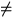

Function subprograms RELIGC and DELIGC calculate a general complete elliptic integral.
Function subprograms RELIKC, RELIEC and DELIKC, DELIEC calculate the complete elliptic integrals K(k) and E(k).
On CDC and Cray computers, the double-precision versions DELI1C etc. are not available.
Mainly for reasons of numerical stability, the algorithms are based on the following definitions:
First kind:
| F1*(k') = (k'2 > 0). |
F2*(k', a, b) =  d(k'2 > 0). d(k'2 > 0). |
| F3*(k', p) = d(k'2 > 0, p0). |
Note that F1*(k') = F2*(k', 1, 1) = F3*(k', 1). For p < 0, the integral F3* is defined by its principal value.
The general integral:
| G(k', p, a, b) | = | d | |
| = | (k'2 > 0). |
The functions K(k) and E(k):
| K(k) | = | (| k| < 1), | |
| E(k) | = | d(| k| |
Other common definitions of the complete elliptic integrals and their
relations to
F1*,
F2*,
F3* are
listed here for convenience (
k2 + k'2 = 1):
First kind:
Second kind:
Third kind: